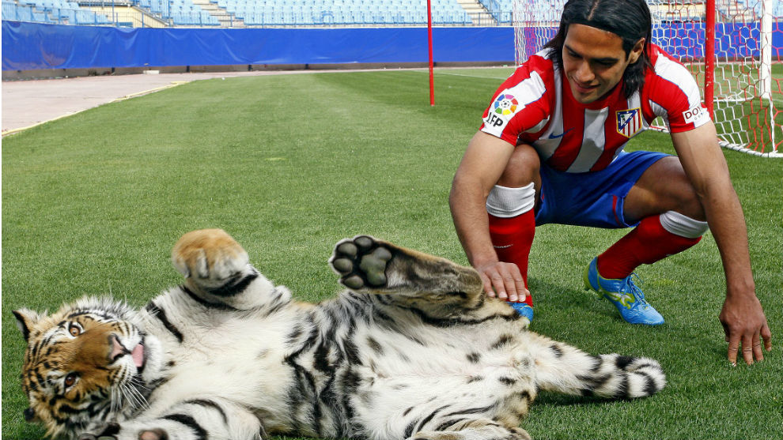
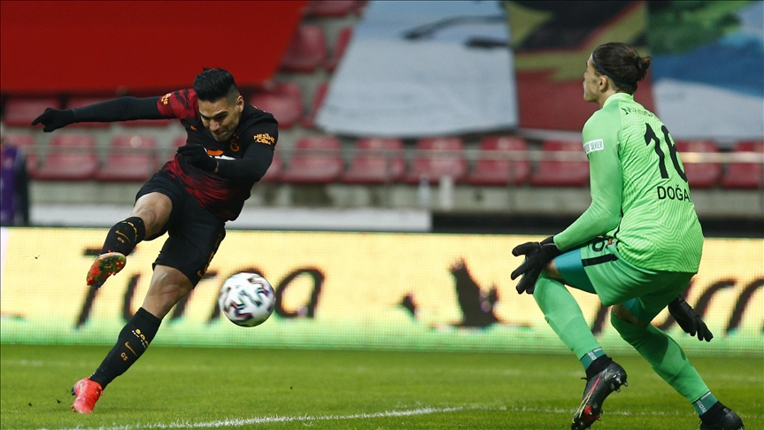

Radamel Falcao García Zárate (Santa Marta, Magdalena, 10 de febrero de 1986), conocido deportivamente como Falcao, es un futbolista colombiano que juega como delantero en el Rayo Vallecano de la Primera División de España. Es internacional con la selección colombiana, de la cual es el máximo goleador histórico. Debutó profesionalmente con trece años en el extinto club colombiano Lanceros Fair Play.4 Es el jugador que más goles ha anotado en una sola temporada de un torneo europeo, con diecisiete goles. Este récord lo comparte con Cristiano Ronaldo, quien marcó diecisiete goles durante la Liga de Campeones de la UEFA 2013-14. Tal récord lo logró con el F. C. Porto en la Liga Europea de la UEFA durante la temporada 2010-2011.567 En julio de 2011 fue considerado el quinto mejor futbolista en Europa (solo por detrás de Lionel Messi, Cristiano Ronaldo, Xavi Hernández y Andrés Iniesta) mediante una votación realizada por cincuenta y tres periodistas deportivos de las federaciones que forman parte de la UEFA
En 2012 fue incluido, por segunda vez consecutiva, entre los mejores diez jugadores de la temporada en Europa. En esta ocasión, fue valorado como el octavo mejor jugador en Europa.n 1 Tal decisión fue tomada con base en una votación en la que, de igual forma que en 2011, se tuvieron en cuenta a cincuenta y tres periodistas representantes de las federaciones miembro de la UEFA.12131415 En el mismo año, fue considerado el tercer mejor jugador del mundo de la temporada 2011-12, según la revista francesa Onze Mondial, mediante el premio Once de Bronce.1617 En el mismo año, fue considerado el mejor futbolista del mundo por Globe Soccer Awards.18 En enero de 2013, fue incluido en el FIFA/FIFPro World XI 2012, mediante una votación en la que participaron más de 50 000 jugadores profesionales de la Federación Internacional de Futbolistas Profesionales (FIFPro).1920 Fue elegido quinto (5.º) mejor jugador del mundo en 2012, según la votación del FIFA Balón de Oro 2012.21 Por segunda ocasión de manera consecutiva, en octubre de 2013, fue incluido en la lista de veintitrés nominados al FIFA Balón de Oro 2013,22 En la votación del galardón entre la primera lista de 23 jugadores, fue elegido el decimoprimer (11.º) mejor jugador del mundo del año 2013.23 Falcao comenzó su carrera profesional en la segunda división colombiana a la edad de 13 años en Lanceros Fair Play, antes de mudarse al club argentino River Plate, donde jugó con su academia juvenil desde 2001 hasta 2005 y luego ganó el Torneo Clausura 2007-08. En 2009, se unió al club portugués Porto, donde ganó varios trofeos, incluido el doblete de la UEFA Europa League y la Primeira Liga en 2011. En agosto de 2011, se mudó al club español Atlético de Madrid por un récord del club de 40 millones de euros. Fue parte integral de la Europa League 2012 y la Supercopa de Europa del club. Falcao también fue prolífico en La Liga durante su tiempo con el Atlético, siendo el tercer máximo goleador en 2011-12 y 2012-13.
Su primera participación para la selección nacional fue en el año 2001, cuando con apenas 15 años disputó el sudamericano sub-17, en donde fue convocado por el entrenador Eleazar Julio Valdivieso y su asistente José Helmer Silva. Además, compartido plantel con jugadores que también llegaron al profesionalismo como Alejandro Otero, Carlos Chávez, Breiner Belalcázar, Javier Araujo, Jorge Perlaza, John Jairo Sandoval y Víctor Hugo Montaño195. Luego en 2005, siendo dirigido por Eduardo Lara fue campeón con la selección colombiana sub-20 en el Sudamericano Sub-20 en el cual Colombia fue el anfitrión. Falcao o "El Tigre" como es a veces conocido, jugó cinco partidos y además le anotó a la selección argentina en el empate 1-1 disputado en el Estadio Palogrande de Manizales. Luego, disputó la Copa Mundial de Fútbol Juvenil de 2005 ese mismo año, donde jugó tres partidos y marcó dos goles contra Canadá y Siria, respectivamente.
El 7 de febrero de 2007 debutó con la selección de mayores en el partido amistoso de Colombia contra Uruguay y el 3 de junio de 2007 marcó su primer gol con la camiseta colombiana ante la selección de fútbol de Montenegro en Japón durante la Copa Kirin. Falcao se perdió la Copa América 2007 por lesiones.
| EQUIPO | GOLES | PARTIDOS |
|---|---|---|
| Rayo Vallecano | 8 | 39 |
| Galatasaray | 0 | 3 |
| monaco | 111 | 172 |
| atletico madrid | 45 | 91 |
| porto | 72 | 87 |
| river plate | 37 | 92 |